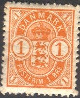
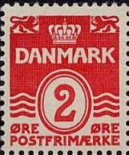
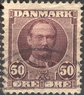
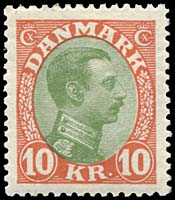
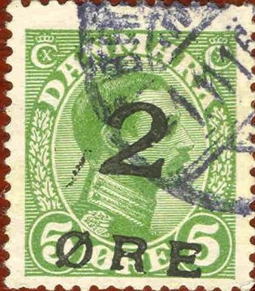
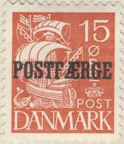

Return To Catalogue - Denmark 1851-1863 - Denmark 1864-1881 - Miscellaneous - Danish West Indies - Bypost (local post)
Curreny 96 Skilling = 1 Rigsbankdaler, after 1875 100 Øre = 1 Krone
Capital Kopenhagen
Note: on my website many of the
pictures can not be seen! They are of course present in the
catalogue;
contact me if you want to purchase it.
For stamps of Denmark from 1864 to 1881 click here.


1 o orange 5 o green 10 o red 15 o lilac 20 o blue 24 o brown Surcharged
'15 ORE 15' on 24 o brown (1904)
For the specialist, the values 5 and 20 o were also issued with very small numbers in the four corners:
(Zoom-in)
Value of the stamps |
|||
vc = very common c = common * = not so common ** = uncommon |
*** = very uncommon R = rare RR = very rare RRR = extremely rare |
||
| Value | Unused | Used | Remarks |
| 1 o | c | c | |
| 5 o | *** | ** | Small numbers in the corners |
| 5 o | c | vc | Large numbers in the corners |
| 10 o | c | vc | |
| 15 o | c | vc | |
| 20 o | *** | * | Small numbers in the corners |
| 20 o | c | vc | Large numbers in the corners |
| 24 o | * | c | |
| 15 o on 24 o | c | c | |
Postcards in the same design:
(Reduced size, 5 o green, I have also seen 10 o red)
1 o orange 2 o red 3 o grey 4 o blue 5 o green (1930) 5 o brown (1921) 7 o green (1926) 7 o violet (1930) 8 o grey 10 o red 10 o green 10 o brown (1930) 12 o violet (1926) 15 o lilac 20 o blue Surcharged 7 (blue) on 8 o grey (1926) '8' on 3 o grey (1921) Overprinted 'PORTO' (postage due stamp, 1921) 1 o orange
Value of the stamps |
|||
vc = very common c = common * = not so common ** = uncommon |
*** = very uncommon R = rare RR = very rare RRR = extremely rare |
||
| Value | Unused | Used | Remarks |
Watermark 'Crown' (1904) |
|||
| 1 o | c | vc | Perforated 13 |
| 2 o | c | vc | Perforated 13 or 14 x 14 1/2 |
| 3 o | c | vc | Perforated 13 |
| 4 o | c | vc | Perforated 13 or 14 x 14 1/2 |
| 5 o green | c | vc | Perforated 13 |
| 10 o | c | vc | Perforated 13 |
| 15 o | c | vc | Perforated 13 |
| 20 o | c | vc | Perforated 13 |
| Watermark 'Multiple Crosses' (1914) | |||
| 1 o | vc | vc | |
| 2 o | c | vc | |
| 3 o | c | vc | |
| 4 o | c | vc | |
| 5 o brown | c | vc | 1921 |
| 5 o green | c | vc | |
| 7 o green | c | vc | 1926 |
| 7 o violet | c | c | 1926 |
| 8 o | c | vc | 1921 |
| 10 o green | c | vc | 1921 |
| 10 o brown | c | vc | 1926 |
| 12 0 | c | c | 1926 |
| 7 on 8 o | c | c | 1926 |
| 8 on 3 o | c | c | 1921 |
| 1 o | c | c | 'PORTO' overprint |
These stamps were issued in later without the small triangles below and above 'DANMARK':

Many values were issued without triangles (even up to the 1970's), for example: 1 o green, 2 o red, 4 o blue, 5 o green, 5 o red, 6 o orange, 7 o violet, 7 o green, 7 o brown, 8 o grey, 8 o green, 10 o orange, 50 o brown, 100 o blue and 200 o green. These stamps are still being used today (2006).
Postcards in the same design:
(Reduced size)
5 o green 10 o red 20 o blue 25 o brown 50 o black 100 o yellow
These stamps have perforation 13 and watermark 'Crown'.
Value of the stamps |
|||
vc = very common c = common * = not so common ** = uncommon |
*** = very uncommon R = rare RR = very rare RRR = extremely rare |
||
| Value | Unused | Used | Remarks |
| 5 o | c | vc | |
| 10 o | c | vc | |
| 20 o | c | vc | |
| 25 o | * | c | |
| 50 o | * | * | |
| 100 o | * | * | |
A so-called 'Stjernestempel' (Starcancel):
I have seen postal stationery in the same design in the values 5 o green and 10 o red.

5 o green 10 o red 20 o blue 25 o brown 35 o yellow (1912) 50 o red 100 o brown
These stamps have perforation 13 and watermark 'Crown'.
Value of the stamps |
|||
vc = very common c = common * = not so common ** = uncommon |
*** = very uncommon R = rare RR = very rare RRR = extremely rare |
||
| Value | Unused | Used | Remarks |
| 5 o | c | vc | |
| 10 o | c | vc | |
| 20 o | c | vc | |
| 25 o | * | vc | |
| 35 o | * | c | |
| 50 o | * | c | |
| 100 o | * | c | |
I have seen postal stationery in the same design in the value 5 o green.

5 K red
These stamps have
Value of the stamps |
|||
vc = very common c = common * = not so common ** = uncommon |
*** = very uncommon R = rare RR = very rare RRR = extremely rare |
||
| Value | Unused | Used | Remarks |
| Watermark 'Crown', perforation 13 (1912) | |||
| 5 K | *** | *** | |
| Watermark 'Multiple Crosses', perforation 14 x 14 1/2 (1915) | |||
| 5 K | *** | ** | |



5 o green 7 o orange 8 o grey 10 o red 12 o grey 15 o lilac 20 o blue 20 o brown 20 o red (1926) 25 o brown 25 o brown and black 25 o red 25 o green (1926) 27 o red and black 30 o green and black 30 o orange 30 o blue (1926) 35 o orange 35 o yellow and black 40 o violet and black 40 o blue 40 o orange (1926) 50 o red 50 o red and black 50 o grey 60 o brown and blue 60 o blue 70 o brown and green 80 o green 90 o brown and red 1 K brown 1 K brown and blue 2 K black 2 K grey and red (1926) 5 K violet and lilac 5 K violet and brown (1927) 10 K red and green (1927)
These stamps have perforation 14 x 14 1/2 and watermark 'Multiple Crosses'.
Value of the stamps |
|||
vc = very common c = common * = not so common ** = uncommon |
*** = very uncommon R = rare RR = very rare RRR = extremely rare |
||
| Value | Unused | Used | Remarks |
| 5 o | c | vc | |
| 7 o | c | vc | |
| 8 o | c | c | |
| 10 o | c | vc | |
| 12 o | c | c | |
| 15 o | * | c | |
| 20 o blue | * | vc | |
| 20 o brown | * | vc | |
| 20 o red | c | vc | |
| 25 o brown | * | c | |
| 25 o brown and black | * | c | |
| 25 o red | * | vc | |
| 25 o green | * | vc | 1925 |
| 27 o | * | * | |
| 30 o green and black | * | vc | |
| 30 o orange | * | vc | |
| 30 o blue | * | vc | 1925 |
| 35 o orange | * | c | |
| 35 o yellow and black | * | c | |
| 40 o violet and black | * | vc | |
| 40 o blue | * | vc | 1922 |
| 40 o yellow | * | c | 1925 |
| 50 o red | * | c | |
| 50 o red and black | * | vc | |
| 50 o grey | * | vc | |
| 60 o brown and blue | * | c | |
| 60 o blue | * | vc | |
| 70 o | * | c | |
| 80 o | ** | * | 1915 |
| 90 o | ** | c | |
| 1 K brown | * | c | |
| 1 k brown and blue | * | vc | |
| 2 K black | ** | c | |
| 2 K grey and black | ** | c | 1925 |
| 5 K violet and lilac | *** | * | |
| 5 K violet and brown | *** | * | 1927 |
| 10 K | *** | * | 1927 |
Surcharged
1919: Faroer Islands issue, image reproduced with permission
from: http://www.sandafayre.com

Forgery of the Faroer surcharge: the surcharge is different from
the genuine one and the stamp is cancelled in 1916, while the
surcharge was only applied in 1919! More on forgeries of this
overprint can be found in
http://posthorn.scc-online.org/volume_3-1.pdf. From this article,
we know that at least up to 1946, only one type of forged
overprint was known.
'2 ORE' on 5 o green (1919 issued for Faroer Islands) '7 7' on 20 o red (1926) '7 7' on 27 o red and black (1926) '8 8' (blue) on 7 o orange (1922) '8 8' (blue) on 12 o grey (1921) '12 12' on 15 o lilac (1926) '20 20' on 30 o orange (1926) '20 20' and bars on 40 o blue (1926)
Value of the stamps |
|||
vc = very common c = common * = not so common ** = uncommon |
*** = very uncommon R = rare RR = very rare RRR = extremely rare |
||
| Value | Unused | Used | Remarks |
| 2 o on 5 o | R | *** | |
| 7 on 20 o | c | c | 1927 |
| 7 on 27 o | c | c | 1926 |
| 8 o on 7 o | c | c | 1922 |
| 8 on 12 o | c | c | 1921 |
| 12 on 15 o | c | c | 1926 |
| 20 on 30 o | c | c | 1926 |
| 20 on 40 o | * | c | 1926 |
Overprinted 'SF' (for soldier letters, 1917)
(Forged overprint!)
5 o green 10 o red
Value of the stamps |
|||
vc = very common c = common * = not so common ** = uncommon |
*** = very uncommon R = rare RR = very rare RRR = extremely rare |
||
| Value | Unused | Used | Remarks |
| 5 o | * | * | |
| 10 o | * | * | |
With overprint 'PORTO' (Postage due stamps, 1921)
5 o green 7 o orange 10 o red 20 o blue 25 o brown and black 50 o red and black 'S F' and 'PORTO' on 10 o red
Value of the stamps |
|||
vc = very common c = common * = not so common ** = uncommon |
*** = very uncommon R = rare RR = very rare RRR = extremely rare |
||
| Value | Unused | Used | Remarks |
| 5 o | * | * | |
| 7 o | * | c | |
| 10 o | * | * | |
| 20 o | * | * | |
| 25 o | ** | * | |
| 50 o | ** | * | |
| 'S F' on 10 o | * | * | |
I have seen postal stationery in the values: 5 o green, 7 o yellow, 10 o red, 15 o lilac, 20 o blue and 20 o brown.
27 o on 1 o olive 27 o on 5 o blue 27 o on 7 o red 27 o on 8 o green 27 o on 10 o lilac 27 o on 20 o green 27 o on 29 o orange 27 o on 38 o orange 27 o on 41 o brown 27 o on 68 o brown 27 o on 1 K green and red 27 o on 5 K red and green 27 o on 10 K brown and blue
Value of the stamps |
|||
vc = very common c = common * = not so common ** = uncommon |
*** = very uncommon R = rare RR = very rare RRR = extremely rare |
||
| Value | Unused | Used | Remarks |
| 27 o on 1 o | * | * | |
| 27 o on 5 o | * | * | |
| 27 o on 7 o | * | * | |
| 27 o on 8 o | * | * | |
| 27 o on 10 o | * | * | |
| 27 o on 20 o | * | * | |
| 27 o on 29 o | * | * | |
| 27 o on 38 o | ** | *** | |
| 27 o on 41 o | * | ** | |
| 27 o on 68 o | * | ** | |
| 27 o on 1 K | * | * | |
| 27 o on 5 K | * | * | |
| 27 o on 10 K | * | * | |

10 o red 10 o green (1921) 20 o grey 40 o brown 40 o blue (1921) Red Cross issue

'+5+' (red) on 10 c green '+10+' (red) on 20 c grey
Value of the stamps |
|||
vc = very common c = common * = not so common ** = uncommon |
*** = very uncommon R = rare RR = very rare RRR = extremely rare |
||
| Value | Unused | Used | Remarks |
| 10 o red | c | vc | |
| 10 o green | c | vc | |
| 20 o | * | vc | |
| 40 o brown | * | c | |
| 40 o blue | * | c | |
| '+5+' on 10 c | * | * | Red Cross issue |
| '+10+' on 20 c | ** | ** | Red Cross issue |
10 o green (4 types) 15 o violet (4 types) 20 o brown (4 types)

10 o green 20 o red 30 o blue (design as 20 o)

15 o red 20 o grey 25 o blue 30 o yellow 35 o brown 40 o green
Two types exist: in Type I the ship is printed on a solid background. In Type II (1933), the ship is printed on a lined background.

15 o with lined background and "POSTFAERGE" overprint
10 o (+ 5 o) green 15 o (+ 5 o) red 25 o (+ 5 o) blue
{kind=link}
{kind=link}